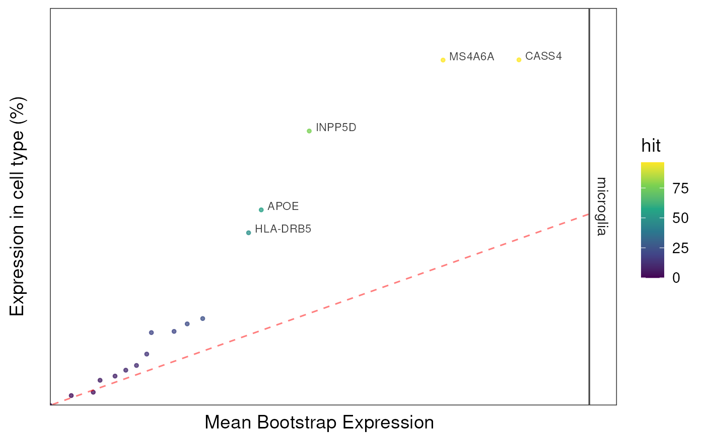
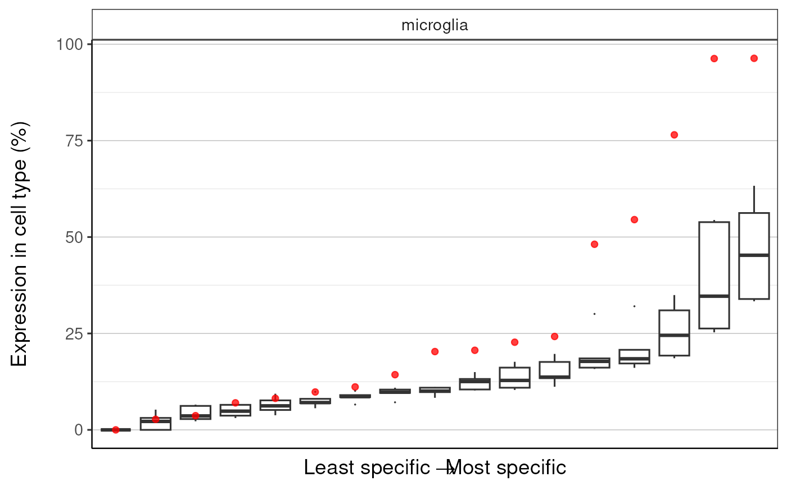
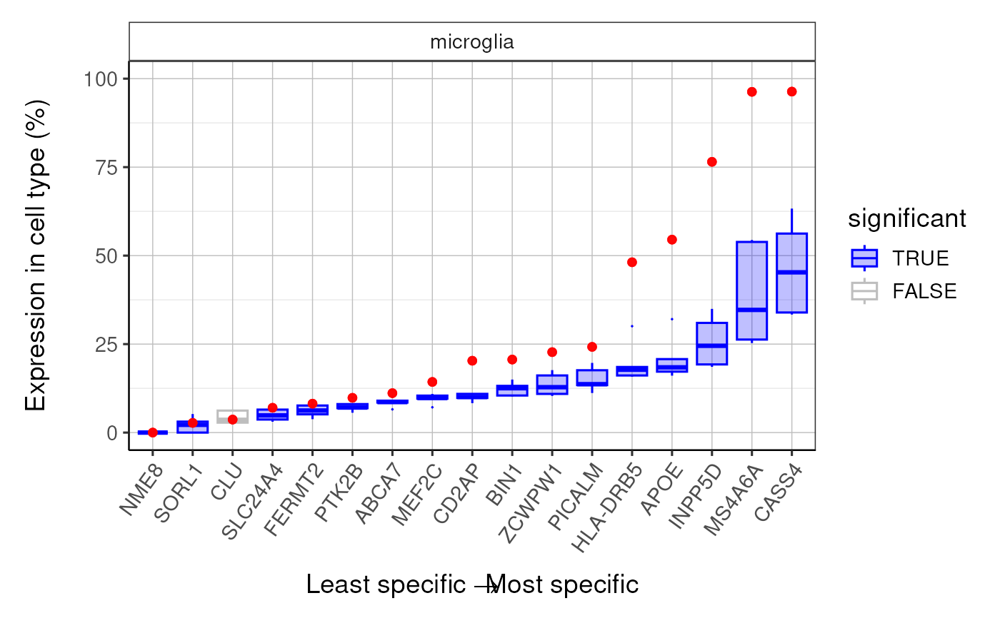
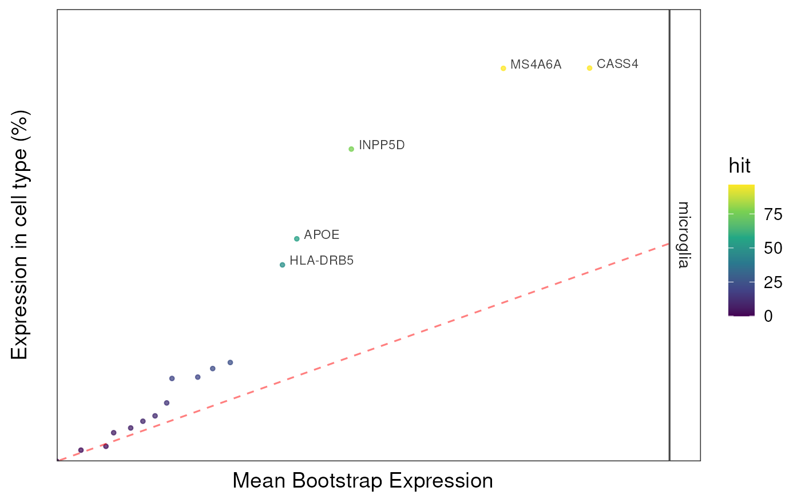
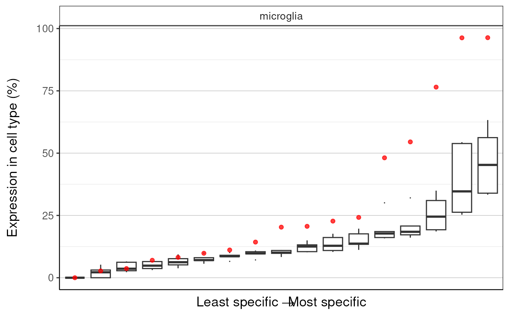
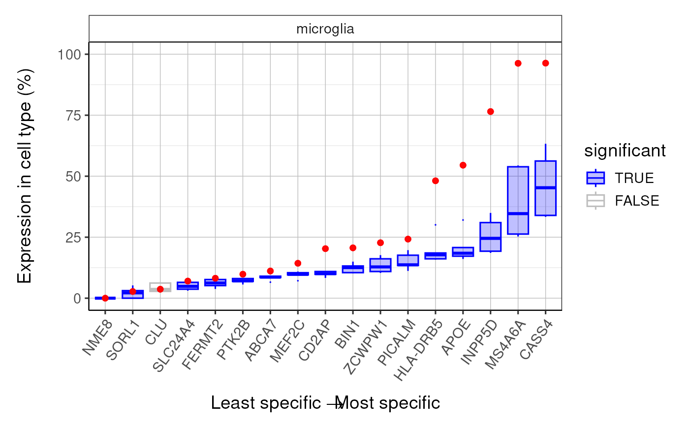

generate_bootstrap_plots takes a gene list and a single cell type
transcriptome dataset and generates plots which show how the expression of
the genes in the list compares to those in randomly generated gene lists.
generate_bootstrap_plots(
sct_data = NULL,
hits = NULL,
bg = NULL,
genelistSpecies = NULL,
sctSpecies = NULL,
output_species = "human",
method = "homologene",
reps = 100,
annotLevel = 1,
geneSizeControl = FALSE,
full_results = NULL,
listFileName = paste0("_level", annotLevel),
adj_pval_thresh = 0.05,
facets = "CellType",
scales = "free_x",
save_dir = file.path(tempdir(), "BootstrapPlots"),
show_plot = TRUE,
verbose = TRUE
)Arguments
- sct_data
List generated using generate_celltype_data.
- hits
List of gene symbols containing the target gene list. Will automatically be converted to human gene symbols if
geneSizeControl=TRUE.- bg
List of gene symbols containing the background gene list (including hit genes). If
bg=NULL, an appropriate gene background will be created automatically.- genelistSpecies
Species that
hitsgenes came from (no longer limited to just "mouse" and "human"). See list_species for all available species.- sctSpecies
Species that
sct_datais currently formatted as (no longer limited to just "mouse" and "human"). See list_species for all available species.- output_species
Species to convert
sct_dataandhitsto (Default: "human"). See list_species for all available species.- method
R package to use for gene mapping:
"gprofiler": Slower but more species and genes."homologene": Faster but fewer species and genes."babelgene": Faster but fewer species and genes. Also gives consensus scores for each gene mapping based on a several different data sources.
- reps
Number of random gene lists to generate (Default: 100, but should be >=10,000 for publication-quality results).
- annotLevel
An integer indicating which level of
sct_datato analyse (Default: 1).- geneSizeControl
Whether you want to control for GC content and transcript length. Recommended if the gene list originates from genetic studies (Default: FALSE). If set to
TRUE, thenhitsmust be from humans.- full_results
The full output of bootstrap_enrichment_test for the same gene list.
- listFileName
String used as the root for files saved using this function.
- adj_pval_thresh
Adjusted p-value threshold of celltypes to include in plots.
- facets
![[Deprecated]](figures/lifecycle-deprecated.svg) Please use
Please use rowsandcolsinstead.- scales
Are scales shared across all facets (the default,
"fixed"), or do they vary across rows ("free_x"), columns ("free_y"), or both rows and columns ("free")?- save_dir
Directory where the BootstrapPlots folder should be saved, default is a temp directory.
- show_plot
Print the plot.
- verbose
Print messages.
Value
Saves a set of pdf files containing graphs and returns the file where
they are saved. These will be saved with the file name adjusted using the
value of listFileName. The files are saved into the
'BootstrapPlot' folder.
Files start with one of the following:
qqplot_noText: sorts the gene list according to how enriched it is in the relevant cell type. Plots the value in the target list against the mean value in the bootstrapped lists.qqplot_wtGSym: as above but labels the gene symbols for the highest expressed genes.bootDists: rather than just showing the mean of the bootstrapped lists, a boxplot shows the distribution of valuesbootDists_LOG: shows the bootstrapped distributions with the y-axis shown on a log scale
Examples
## Load the single cell data
sct_data <- ewceData::ctd()
#> see ?ewceData and browseVignettes('ewceData') for documentation
#> loading from cache
## Set the parameters for the analysis
## Use 5 bootstrap lists for speed, for publishable analysis use >10000
reps <- 5
## Load the gene list and get human orthologs
hits <- ewceData::example_genelist()
#> see ?ewceData and browseVignettes('ewceData') for documentation
#> loading from cache
## Bootstrap significance test,
## no control for transcript length or GC content
## Use pre-computed results to speed up example
full_results <- EWCE::example_bootstrap_results()
#> Loading precomputed example bootstrap results.
### Skip this for example purposes
# full_results <- EWCE::bootstrap_enrichment_test(
# sct_data = sct_data,
# hits = hits,
# reps = reps,
# annotLevel = 1,
# sctSpecies = "mouse",
# genelistSpecies = "human"
# )
output <- EWCE::generate_bootstrap_plots(
sct_data = sct_data,
hits = hits,
reps = reps,
full_results = full_results,
sctSpecies = "mouse",
genelistSpecies = "human",
annotLevel = 1
)
#> Warning: sctSpecies_origin not provided. Setting to 'mouse' by default.
#> Generating gene background for mouse x human ==> human
#> Gathering ortholog reports.
#> Retrieving all genes using: homologene.
#> Retrieving all organisms available in homologene.
#> Mapping species name: human
#> Common name mapping found for human
#> 1 organism identified from search: 9606
#> Gene table with 19,129 rows retrieved.
#> Returning all 19,129 genes from human.
#> Retrieving all genes using: homologene.
#> Retrieving all organisms available in homologene.
#> Mapping species name: mouse
#> Common name mapping found for mouse
#> 1 organism identified from search: 10090
#> Gene table with 21,207 rows retrieved.
#> Returning all 21,207 genes from mouse.
#> --
#> --
#> Preparing gene_df.
#> data.frame format detected.
#> Extracting genes from Gene.Symbol.
#> 21,207 genes extracted.
#> Converting mouse ==> human orthologs using: homologene
#> Retrieving all organisms available in homologene.
#> Mapping species name: mouse
#> Common name mapping found for mouse
#> 1 organism identified from search: 10090
#> Retrieving all organisms available in homologene.
#> Mapping species name: human
#> Common name mapping found for human
#> 1 organism identified from search: 9606
#> Checking for genes without orthologs in human.
#> Extracting genes from input_gene.
#> 17,355 genes extracted.
#> Extracting genes from ortholog_gene.
#> 17,355 genes extracted.
#> Checking for genes without 1:1 orthologs.
#> Dropping 131 genes that have multiple input_gene per ortholog_gene (many:1).
#> Dropping 498 genes that have multiple ortholog_gene per input_gene (1:many).
#> Filtering gene_df with gene_map
#> Adding input_gene col to gene_df.
#> Adding ortholog_gene col to gene_df.
#>
#> =========== REPORT SUMMARY ===========
#> Total genes dropped after convert_orthologs :
#> 4,725 / 21,207 (22%)
#> Total genes remaining after convert_orthologs :
#> 16,482 / 21,207 (78%)
#> --
#>
#> =========== REPORT SUMMARY ===========
#> 16,482 / 21,207 (77.72%) target_species genes remain after ortholog conversion.
#> 16,482 / 19,129 (86.16%) reference_species genes remain after ortholog conversion.
#> Gathering ortholog reports.
#> Retrieving all genes using: homologene.
#> Retrieving all organisms available in homologene.
#> Mapping species name: human
#> Common name mapping found for human
#> 1 organism identified from search: 9606
#> Gene table with 19,129 rows retrieved.
#> Returning all 19,129 genes from human.
#> Retrieving all genes using: homologene.
#> Retrieving all organisms available in homologene.
#> Mapping species name: human
#> Common name mapping found for human
#> 1 organism identified from search: 9606
#> Gene table with 19,129 rows retrieved.
#> Returning all 19,129 genes from human.
#> --
#>
#> =========== REPORT SUMMARY ===========
#> 19,129 / 19,129 (100%) target_species genes remain after ortholog conversion.
#> 19,129 / 19,129 (100%) reference_species genes remain after ortholog conversion.
#> 16,482 intersect background genes used.
#> Standardising sct_data.
#> Aligning celltype names with standardise_ctd format.
#> Checking gene list inputs.
#> 1 celltype(s) remain @ <= 0.05
#> Resampling random genes.
#> Computing gene scores.
#> Generating bootstrap plot for 1 celltype(s).
#> Warning: The `facets` argument of `facet_grid()` is deprecated as of ggplot2 2.2.0.
#> ℹ Please use the `rows` argument instead.
#> ℹ The deprecated feature was likely used in the EWCE package.
#> Please report the issue at <https://github.com/NathanSkene/EWCE/issues>.
#> Saving plot --> /tmp/RtmpTwJkJv/BootstrapPlots/qqplot_noText_____level1.pdf
#> Saving plot --> /tmp/RtmpTwJkJv/BootstrapPlots/qqplot_wtgene_____level1.pdf
#> Saving plot --> /tmp/RtmpTwJkJv/BootstrapPlots/bootDists_____level1.pdf
#> Saving plot --> /tmp/RtmpTwJkJv/BootstrapPlots/bootDists_LOG_____level1.pdf
#> $plot1
 #>
#> $plot2

#>
#> $plot3

#>
#> $plot4

#>
#>
#> $plot2

#>
#> $plot3

#>
#> $plot4

#>